22 Chapter 22 — Expected Value: xG, VAEP, EPV, and Their Sport Transplants
The possession-value ladder, pickleball's missing model, and the rugby anchor that needs no tracking data
22.1 Value Is a Decision-Relevant Number
A coach's question is rarely "what happened" — it is "was that the right choice?" The answer requires a value model: what is a court state worth, and what was the action worth from that state? This chapter is the ladder of value models, the pickleball gap this book fills, and the rugby anchor that exists precisely because rugby league's public data is event-based, not tracking-based.
Two running decisions anchor the chapter. In pickleball: third shot, serving team, the return has come back deep with backspin — drive it hard, or drop it soft into the kitchen? In rugby league: fifth tackle, ball on the opposition thirty-metre line — run the set play, or kick for the corner? Neither question is answerable from event counts alone. "He dropped 60% of his third shots" describes behavior; it says nothing about whether the drop was worth more than the drive from that state. The value model is the bridge between the PBN/NRLSheet event rows of chapter 17 and a number a coach can act on.
Every claim in this chapter carries one of three labels. Source-backed: a published method with a citable paper (xG, xT, VAEP, the Sawczuk rugby EPV family). Measured: our lab's own experiment output, cited by its experiment ID (the C22-lab calibration report). [verify]: a practitioner-model number that TacticalVerify could not find in the literature — real enough to teach with, not real enough to cite as established. The Delta-EPV decision boundary of §22.4 is the chapter's one [verify] artifact, and it is labeled as such every time it appears.
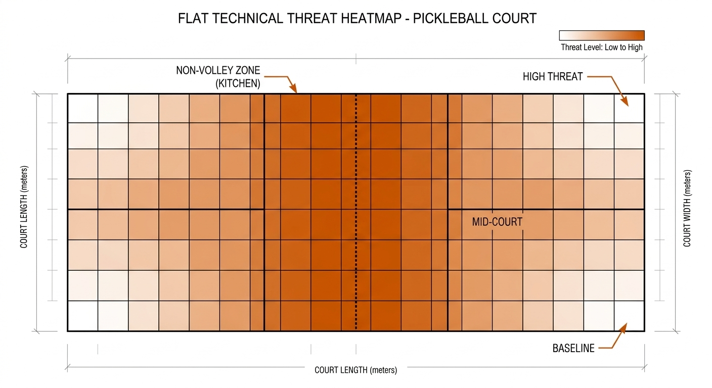
22.2 The Possession-Value Ladder
| Model | Computes | Sport Fit |
|---|---|---|
| xG | P(shot becomes a goal) | Soccer; not applicable to pickleball's rally structure (no discrete shot-to-goal) |
| xT | Expected threat of being in a location with the ball | Any sport with location states — the heat grid (karun.in) |
| VAEP | Action value = value(state after) − value(state before) | Soccer (socceraction/SPADL); the transferable accounting |
| EPV | Expected points of a possession through time | Basketball (Cervone 2014), NFL; the possession worth |
The ladder matters because each rung answers a different question, and picking the wrong rung is the most common practitioner error. xG asks "was that shot a good idea?" — a binary-outcome probability conditioned on shot location, angle, body part, and defensive pressure. It is descriptive, not magical: it tells you what an average finisher does from that spot, not whether your striker is elite. xT (Expected Threat, Karun Singh 2018) asks "where is danger?": the pitch is cut into a 16×12 grid, historical event streams estimate P(goal | possession passes through zone z), and an action's value is xT(end zone) − xT(start zone). VAEP asks "what did the action change?" — the only rung of the three that sees defensive value, because a tackle that collapses the opponent's scoring probability scores positive. EPV asks "what is this possession worth right now?" — a continuous surface over game states that can value a pass option before the ball is played.
The sport fit follows from the scoring structure. Pickleball's rally structure makes VAEP the natural fit: each shot is a discrete action that changes the state, and the state (court zone, rally phase, who is at the kitchen line) is small enough to estimate honestly. Rugby league's set-of-six structure makes EPV the fit: each set is a possession with a measurable point outcome (try, penalty goal, dropout, turnover), and field position dominates the value — which is why the rugby models in §22.5 need only event data. xG, the most famous rung, fits neither of our sports well: pickleball has no shot-to-goal event, and a rugby league try is the end of a six-tackle sequence, not a single shot. That is a useful lesson in itself — the most popular model is popular because soccer is popular, not because it is the right abstraction everywhere.
The accounting transfer is the point: socceraction's SPADL→VAEP pipeline is the mechanism, and the mechanism ports to any rally sport with a defined state. Pickleball's state is (court zone, shot phase, player positions) — small enough that a logistic or Markov is the honest first cut — and the shot-decision question (drive vs drop on the third shot) is exactly where value models answer coaching questions. The pklmart corpus (300k+ shots, ~1,000 matches, CC BY-NC-SA 4.0) is the first statistical prior; the book's model is the first-of-kind validation. Rugby's equivalent prior is the published record: 768 NRL matches in Kempton 2016 and 99,966 possessions in Sawczuk 2024.
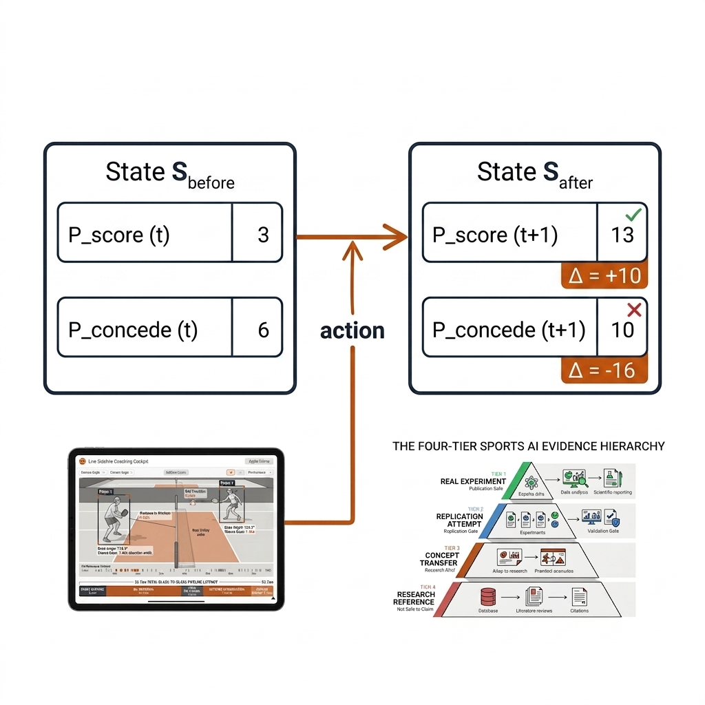
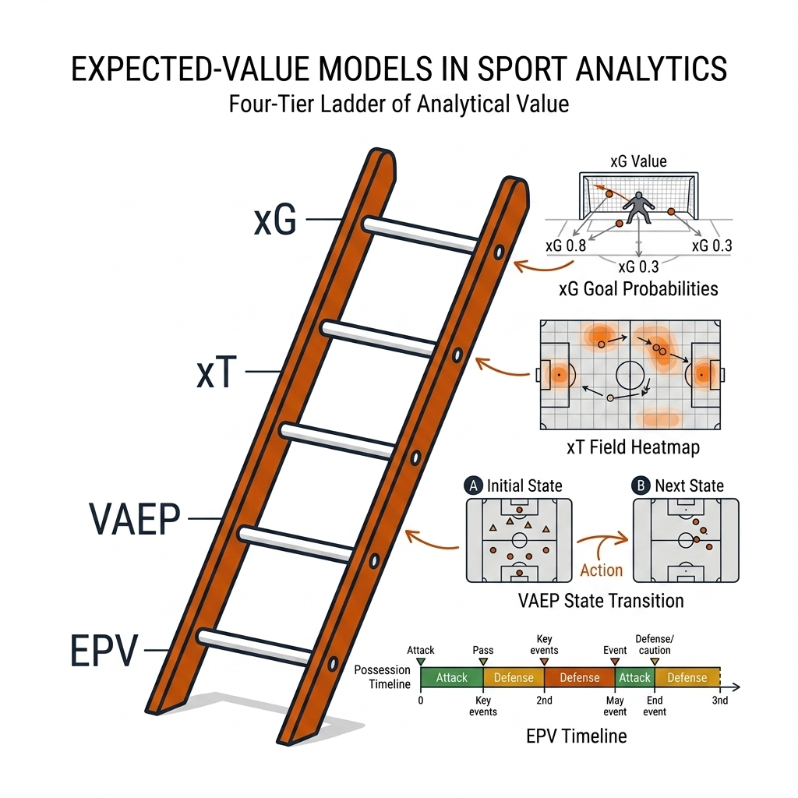
22.3 VAEP in Depth
VAEP's insight is clean: a state has two probabilities (P our team scores, P opponent scores); an action's value is the change it induces in both. The accounting identity, for action a_i moving the game from state S_{i−1} to S_i:
VAEP(a_i) = [P_score(S_i) − P_score(S_{i−1})]
− [P_concede(S_i) − P_concede(S_{i−1})]The sign convention rewards actions that raise your scoring probability or lower the opponent's. A sideways pass that keeps the ball in a low-threat zone scores near zero. A tackle that kills a counter-attack scores strongly positive, because it collapses the opponent's P_score — this is what separates VAEP from xT, which is blind to defensive actions. The socceraction library (pip, Apache-2.0, M4 ✅) implements the full recipe over SPADL event rows — one row per on-ball action with game_id, period, time, team, player, start/end coordinates, action type, bodypart, and result. The training recipe, reproducible on the open StatsBomb dataset:
1. Convert provider events → SPADL (StatsBombLoader / OptaLoader / WyscoutLoader)
2. Build states S_i = {a_{i−2}, a_{i−1}, a_i} (k = 3 previous actions)
3. Orient all play left-to-right (fs.play_left_to_right)
4. Label: scores = 1 if team scores within next 10 actions; concedes likewise
5. Features: actiontype, result, goalscore, start/end location, movement,
space_delta, start/end polar, team (socceraction.vaep.features)
6. Train two XGBoost classifiers: P_score, P_concede
7. VAEP(a_i) = ΔP_score − ΔP_concede per actionTwo refinements matter for the transplant. Atomic SPADL (Decroos & Davis 2020, arXiv 2011.00126) splits each action into movement plus action-plus-result, so the movement between contacts is valued separately — the PBN v2 proposal's start/end court coordinates are exactly the pickleball atomic layer. The 2025 U-Net EPV recipe (Overmeer et al., arXiv 2502.02565) decomposes a pass into reward (EPV if it succeeds) and risk (cost if it fails), with net value = reward × P(success) − risk × P(failure), and reports 78% accuracy on its OJN pass benchmark with better calibration error than the baselines. That reward/risk split is the most transferable idea in the modern literature: it is precisely the shape of the drive-vs-drop problem.
Pickleball transfer. Each shot is a VAEP action: P_score becomes P(serving team wins the rally), P_concede becomes P(receiving team wins it). A third-shot drop that lands in the kitchen raises the serving team's P(win) slightly and — more importantly — slashes the receiving team's P(win now) by denying the put-away. The value is mostly in the concede term, which is why drop-happy players look ordinary in winner counts but strong in VAEP accounting. Rugby transfer. Each tackle is an action: a hit-up that gains eight metres on tackle two raises P(try this set); a dominant tackle that pins the ball-carrier behind the gain line lowers it. Rugby league's concede term is real too — a slow play-the-ball hands the defensive line time, raising the defense's P(force turnover or error). The practitioner playbook's ruck-speed bands (lightning-quick ball vs controlled ruck) are, in VAEP language, a claim about how the concede term moves with ruck time [verify].
22.3b EPV: The Possession Through Time
EPV generalizes VAEP from action deltas to a continuous state value. The founding model is Cervone, D'Amour, Bornn & Goldsberry 2014 (arXiv 1408.0777): a multiresolution stochastic process with a micro level (how players move) and a macro level (what players decide — pass, shoot, turn over), producing the expected points of a basketball possession at any instant given all ten players and the ball. EPV is the most powerful rung and the most dangerous: because it can value things that never happened — the pass option not taken — it is the easiest to over-interpret.
Basketball EPV is the closest published analogue to what our two sports need, because all three are point-based, possession-limited, and spatially continuous. The transplant recipe: swap the court for the pickleball court or the 100×68 m rugby league field; swap the possession-ending events (shot, turnover) for the sport's outcomes (rally won/lost; try, penalty, dropout, handover); swap the macro decision vocabulary for drive/drop/dink or run/pass/kick. In rugby league the possession is the set of six, and the EPV line through the set is a coaching visual in its own right: value climbs with each tackle that gains metres, spikes on a line break, and collapses on a forced error. In pickleball the possession is the rally, and the EPV line is nearly binary at the serve (low, symmetric) but widens dramatically after the third shot — the moment the value model earns its keep, because that is where the drive/drop choice sets the trajectory.
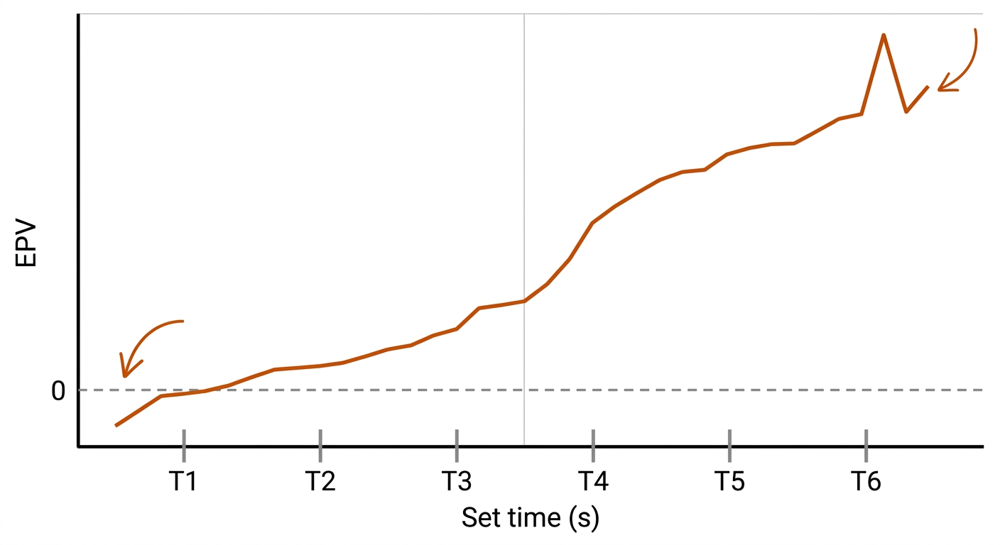
22.4 The Pickleball Gap: First-of-Kind
Verified: no public EPV/xT/pitch-control/Markov work exists on pickleball (research pass of 2026-08-30). The sport has ratings (DUPR, UTR-P), one tracking-grade clip corpus (pb-003), and one scale-grade event corpus — but no published model that answers the central coaching question: given the state of this rally, what is each available shot worth? This book's practitioner model is, to our knowledge, the first.
The data plumbing. The statistical prior is the pklmart Kaggle corpus: 300k+ shot records across ~1,000 competitive doubles matches, skill range 4.0 to professional, relational tables for games, rallies, shots, players, teams, and tournaments, licensed CC BY-NC-SA 4.0. The pklshop Python loader (PyPI, M4 ✅) reads the tables into pandas; the book's pklmart→PBN serializer maps them into the PBN v2 row shape of chapter 17, adding the evidence layer and spine key (clip_id, frame_idx, pts_s) that pklmart itself does not carry. The same VAEP/xT tooling then runs on pklmart history and on pb-003 video-derived rows without a schema break. One honest dependency: full xT-style court surfaces are blocked until PBN v2 start/end court-metre coordinates are extracted (chapter 6 homography × chapter 17 v2 migration).
The first honest model. Deliberately small — the state space is court zones × rally phases × shot types, roughly 100–300 states, so a logistic or Markov chain is the defensible first cut, not a neural net:
1. P(server_wins_point | state, shot_type, target_zone) — logistic, pklmart rows
2. P(next_phase | state, shot_type, outcome) — empirical transitions
3. EPV = P(win now)·(+1) + P(lose now)·(−1) + P(continue)·V(next_state)
4. Decision: compare EPV(drive) vs EPV(drop) from the same stateThe Delta-EPV decision boundary. The practitioner model evaluates the third shot as ΔEPV(S) = E[Y | drop, x] − E[Y | drive, x], conditioned on the return state. The resulting boundary — the chapter's one [verify] artifact, a practitioner estimate that TacticalVerify could NOT-FOUND in the published literature — is:
| Return state | ΔEPV | Call |
|---|---|---|
| Deep with backspin (X_ret ≤ 2.0 ft from baseline) | +0.142 [verify] | Drop — neutralize, take the kitchen |
| Short, high bounce (X_ret > 5.5 ft, apex z > 0.9 m) | −0.188 [verify] | Drive — attack before they set |
Read the signs through the VAEP lens: against a deep, backspin return the drive's failure modes (net, long, attackable pop-up) dominate its reward, so the drop's value is positive relative to it; against a short, sitting return the drop forfeits a rare attack state, so the drive's value exceeds it by nearly two-tenths of a point. Treat both numbers as a hypothesis the pklmart-fitted model should test — the table is what a coach believes; the lab is what the data says.
Rugby mirror. Rugby league has the same conditioned-decision shape at fifth tackle: kick early from deep in your half (low EPV either way, so take the territory) versus run the shape inside the opposition twenty (high EPV, keep the ball alive). The difference is that rugby's boundary has forty years of event data behind it; pickleball's has one practitioner table and a corpus waiting to be fitted.
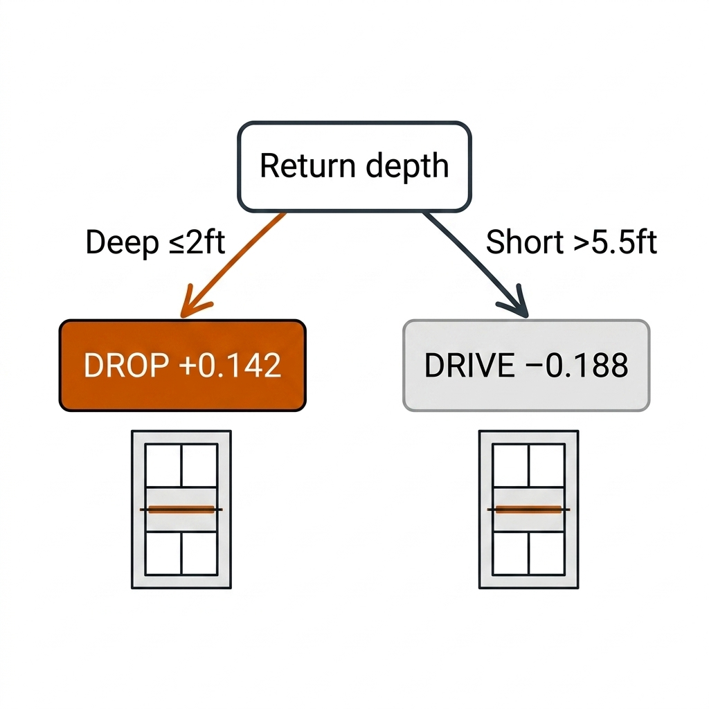
22.5 The Rugby Anchor: Sawczuk Bayesian EPV
Rugby league's value model exists precisely because its public data is event-based — the constraint forced the right model. The lineage has three rungs. Kempton, Kennedy & Coutts 2016 (Journal of Sports Sciences) analysed all 768 regular-season NRL matches from 2010–2013 with an iterative point-equity estimate: possession value rises monotonically toward the opposition try line; possessions following an opposition error, penalty, or goal-line dropout are the most likely to produce a try; possessions following a completed set or restart are the least. Field position dominates — the foundational evidence. Sawczuk et al. 2021 (PLOS ONE) modeled 59,233 plays from 180 Super League matches (2019) as a Markov Reward Process over pitch zones, testing grids from 9 to 308 zones; the 19-zone and 13-zone models (EPV-19, EPV-13) gave the best balance of reproducibility and useful variation. Sawczuk, Palczewska, Jones & Palczewski 2024 (PLOS ONE 19(11):e0308222; arXiv 2212.10904) is the anchor: a Bayesian mixture model over 99,966 observations from the 2021 Super League season with 33 spatial centres (30 in the field of play, 3 in the opposition in-goal), estimating P(converted try), P(unconverted try), P(penalty goal), P(drop goal), and P(no points), interpolated into a smooth EPV surface — from event data only, no tracking required.
That last property is why it is the book's anchor: the inputs (field position, tackle count, possession outcome) are exactly the fields the NRLSheet schema of chapter 17 proposes, so a practitioner with nrlR scrapes plus manual set-coding can replicate the pipeline on day one. The official NRL feed is closed (Stats Perform/Opta); the open paths are nrlR, Rugby League Project, and UselessNRLStats aggregates — which is also why the book's one canonical set-of-six from the nrl-001 broadcast clip (manual set-coding plus CV-derived tackle candidates, chapters 17–19) is a genuine contribution, not a tutorial exercise.
The six-again era is the open reader project. The NRL introduced the six-again rule in 2020; every published value predates its effect on the NRL. Set restarts now cost the defense an extra tackle rather than conceding a penalty, which should raise the value of ruck speed and shift the EPV surface's gradient in the middle third. Re-estimating Sawczuk's Bayesian mixture on post-2020 NRL data is a well-scoped project with a real answer at the end — and a natural publication.
Pickleball mirror. Note what rugby did not wait for: tracking data. The Bayesian EPV runs on coded events with field position — the same data class pklmart already provides for pickleball. The rugby anchor is the proof of concept that the pickleball gap of §22.4 is fillable with the data that exists today.
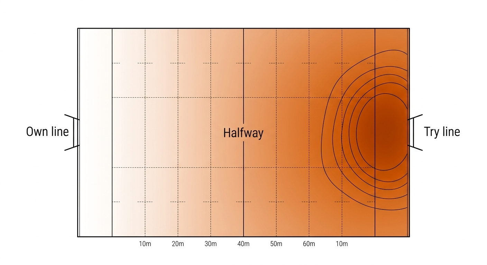
22.6 Pitch Control
Beyond value: space control. Voronoi ownership (the book's chapter-8 base) is the geometric first cut — fast, interpretable, and wrong the way a cartoon is wrong: it assumes every player reaches their region instantly and ignores velocity, reaction time, and ball flight. Spearman's pitch control (2018 MIT Sloan, Beyond Expected Goals) makes it probabilistic: control(x, y, t) is the probability a player can reach and control a ball placed at (x, y), computed from a time-to-arrival distribution over each player's position, velocity, and acceleration. A player running toward a space controls more of it than a stationary player at the same distance — the single most important correction to the Voronoi intuition.
The marriage to EPV is the payoff: pitch control answers "who can reach this space?", EPV answers "what is it worth if they do?". A pass option is valuable only when both are high — the receiver controls the landing zone and the zone has value. TacticAI (DeepMind, Nature Communications 2024; arXiv 2310.10553) is the extreme end: a D₂-equivariant GNN over all 22 players that recommends positional adjustments on corners; Liverpool's expert coaches preferred its suggestions to real tactics 90% of the time. exPress (MIT Sloan 2025) extends the ladder to defense, valuing individual pressing actions off the ball.
Pickleball case. The kitchen is the highest-value zone and the middle seam is its weakest-control corridor — the chapter-8 finding, restated in value language. The Forehand Alpha convention (left-side player owns the central corridor) is a control-allocation rule: it assigns the seam to the player whose forehand reaches it fastest, maximizing team control over the highest-EPV strip of court. Rugby case. The defensive line is a control surface problem: when adjacent defenders drift more than ~2.5 m apart (the dog-leg), the attacker owns the gap and line-break probability jumps sharply [verify] — the control surface tearing, in Spearman's terms. Both sports teach the same lesson: value without control is a wish; control without value is a sweat.
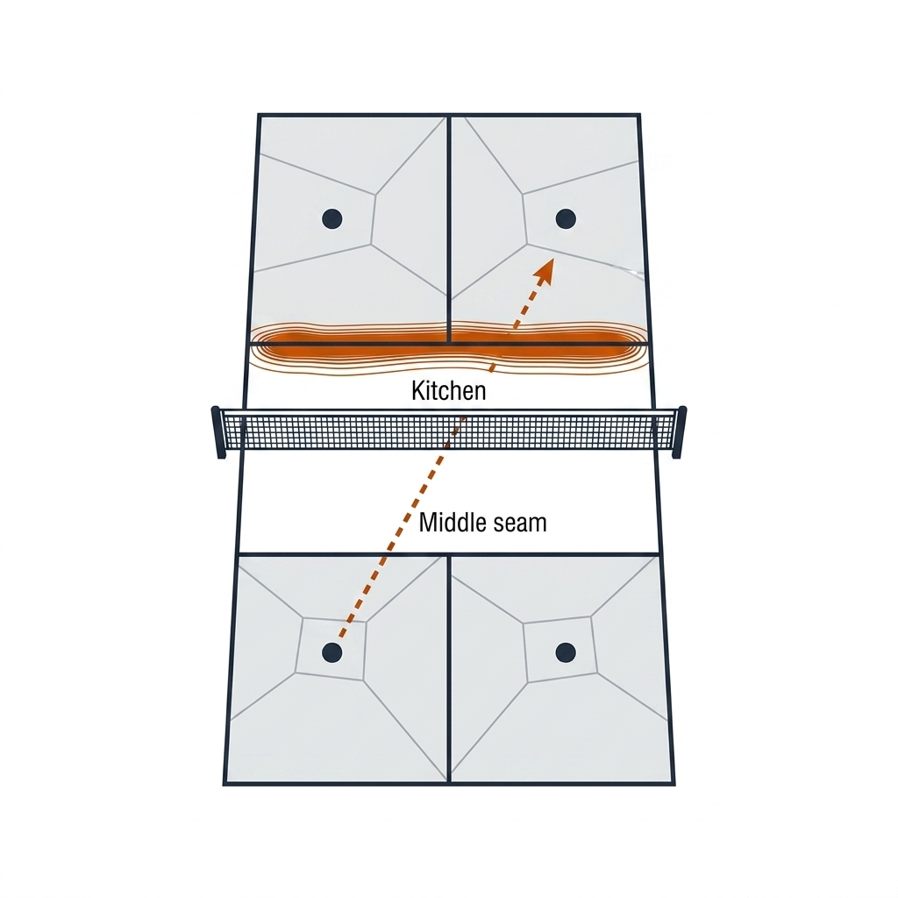
22.7 Calibration: The C20 Discipline Applied
A value model with good ranking and bad calibration is unusable for decisions. Ranking (AUC) tells you the model orders states correctly; calibration tells you the numbers mean what they say — and decisions consume the numbers. When the model says the drive is worth 0.65 and the drop 0.50, the coach acts on the gap; if the true rates are 0.52 and 0.50, the advice is noise with confidence. The scoring-rule choice matters: Brier score (mean squared probability error) is proper, bounded, and decomposable into reliability and resolution — the teaching default. Log loss punishes confident errors without bound — use it when probabilities feed downstream decisions where a confident wrong 0.95 is catastrophic. ECE (binned |accuracy − confidence|) is the audit number, but it is unstable across bin choices — always disclose the binning protocol. And never report AUC alone: a model can rank perfectly while every probability is 0.2 too high.
Our lab's honest threat model (C22-lab; logistic, 4 features, 200 synthetic states; experiments/c22-expected-value/outputs/metrics.json) reports the shape of the report every value model must ship:
| Bin | Predicted mean | Observed rate |
|---|---|---|
| 0.00-0.25 | 0.145 | 0.115 |
| 0.25-0.50 | 0.384 | 0.339 |
| 0.50-0.75 | 0.620 | 0.700 |
| 0.75-1.00 | 0.815 | 0.846 |
Brier score 0.1728; the bins track within ~0.05. That is an honest, calibrated toy — and it demonstrates the report every value model must ship: Brier + per-bin reliability, never AUC alone (chapter 20). When a model fails the bins, the first fix is temperature scaling (Guo et al. 2017, arXiv 1706.04599): one scalar fitted on a validation set, ~20 lines of PyTorch, which routinely fixes overconfident neural value models. Isotonic regression (sklearn's CalibratedClassifierCV) is the non-parametric alternative when the miscalibration is not monotone-uniform. The known soccer failure modes translate directly: location-only xG models overrate open looks and underrate crowded-box chances — the pickleball equivalent is a zone-only model that overrates kitchen-line dinks and underrates the speed-up from the same zone. Both sports' audits must exist from day one, and both must resample uncertainty at the match level, not the row level — 300k pklmart shots are ~1,000 independent matches, not 300k independent observations.
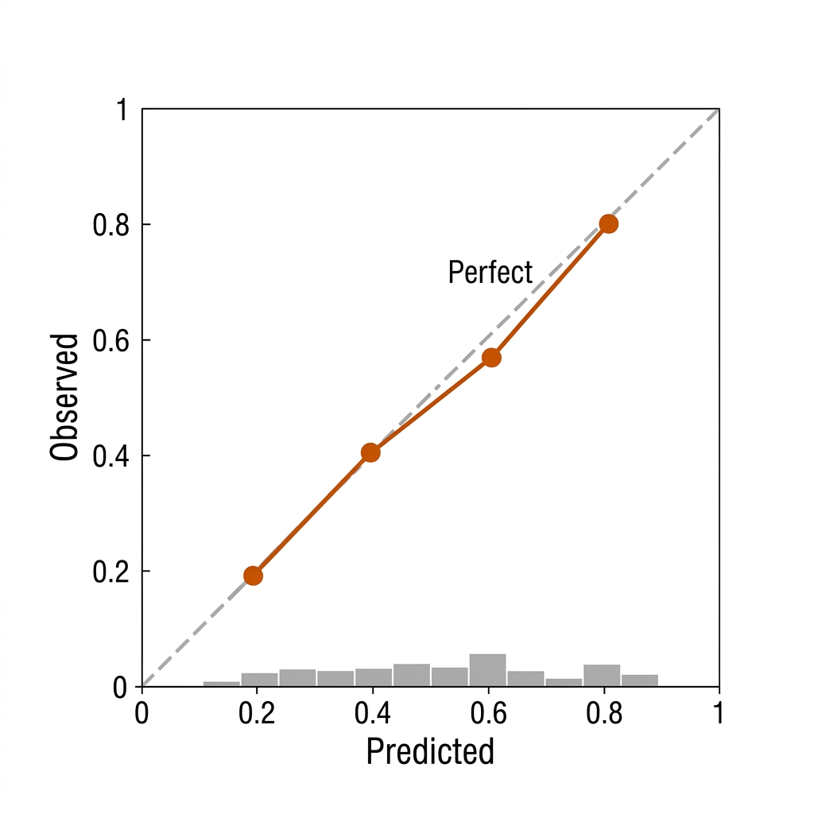
22.8 Honest Limits
- Action value is context-dependent: a drive is worth different amounts depending on opponent position, rally phase, and score — the state space is the hard part, not the model. The same limitation bites rugby: tackle-two EPV from the thirty-metre line is an average over very different defensive shapes.
- EPV is not causality: the value tells you the state's worth, not that the action caused it. A player with high VAEP may simply be handed good states by teammates. Report value added over a same-state baseline, never raw value (chapter 24's counterfactual framing is the fix).
- Selection bias is structural: players attempt hard shots only when they judge the state favorable. The pklmart drive-vs-drop estimate will overstate the drive's value if only strong drivers attempt it — condition on player or instrument the choice.
- On-ball blindness: xG/xT/VAEP and most EPV models value only on-ball events. The pickleball partner pinching the middle and the rugby fullback's kick-return positioning are invisible unless the state representation includes them.
- Pickleball's model is small-state: court zones × shot types ≈ 100-300 states — a logistic or Markov is the honest first cut, not a neural net. And its headline numbers are [verify] practitioner estimates until the pklmart fit lands.
- Rule drift staleness: every published rugby value predates the NRL's six-again era; pickleball's own rulebook (the 2025 serve and rally-scoring experiments) will do the same to any model the moment it is fitted.
22.8b The 10 Use Cases: Applied Framework
The use cases below are the applied bridge from the ladder (§22.2) to the two sports. They follow three categories: Category A — Pickleball Shot Decisions (UC 01-03), Category B — Rugby League Possession Decisions (UC 04-06), and Category C — Model Discipline & Transfer (UC 07-10). Each case carries its practical problem, the mechanism and math, a figure, a pickleball and a rugby league application box, and a payoff line naming who benefits. Evidence labels hold throughout: source-backed (paper), measured (book experiment E-ID), or [verify] (practitioner model not established in the literature). The Delta-EPV boundary of §22.4 remains [verify] everywhere it appears.
Category A: Pickleball Shot Decisions (UC 01-03)
UC 01 — The Third-Shot Decision: Drop vs Drive
The canonical pickleball decision: serving team, third shot, the return has come back deep with backspin. The problem is that neither event counts nor winner totals answer it — "he drops 60% of his third shots" describes a habit, not a value. The mechanism is the one-step expected-value model of §22.4: EPV = P(win now)·(+1) + P(lose now)·(−1) + P(continue)·V(next_state), and the decision rule is the sign of ΔEPV(S) = E[Y | drop, x] − E[Y | drive, x]. The practitioner boundary — deep backspin return: drop by +0.142; short high return: drive by −0.188 — is [verify]: a coaching-belief table the pklmart fit must test, per the lab plan in §22.9.
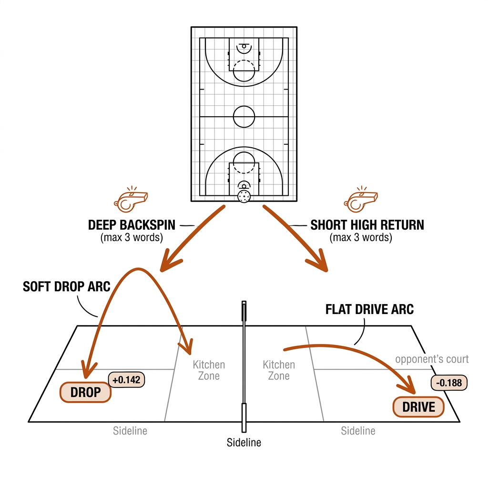
Payoff: coaching — a rehearsed shot-selection rule with a number attached, replacing "it depends" with a conditioned boundary the player can drill.
UC 02 — Serve-Selection Value
The serve is the only fully controlled shot in pickleball, and the serving team starts the rally at a structural disadvantage — both opponents are already set at the kitchen. The problem: is a hard, deep, corner serve worth more than a safe spin serve to the middle? The mechanism values the serve by what it produces, not by what it is: V(serve_t) = Σ_r P(return r | serve_t)·V(state after return r) − P(fault | serve_t)·V(side-out). A serve whose only effect is a neutral return has near-zero value even at 100 km/h; a serve that buys a short, attackable return has value equal to the third-shot boundary it unlocks (UC 01). Component probabilities are [verify] until the pklmart fit; the accounting shape is source-backed (the VAEP action-value identity, §22.3).
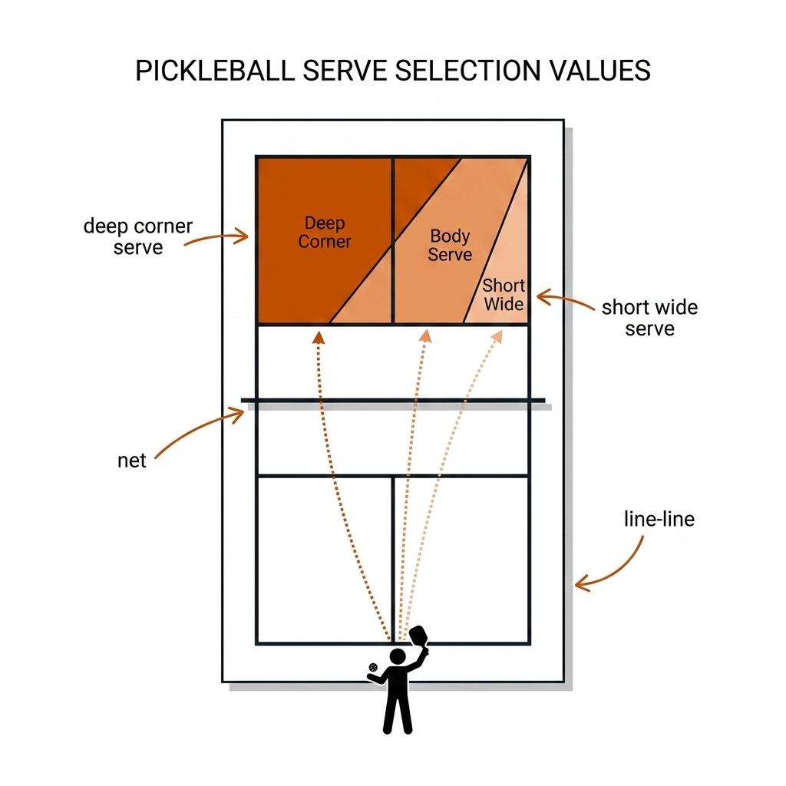
Payoff: coaching and scouting — serve plans keyed to opponent return weakness, and a number to defend the choice in review.
UC 03 — Dink Exchange Value
The dink rally is where recreational players get impatient and professionals get paid. The problem: when do you keep dinking, and when do you speed up? The mechanism is the concede term of the VAEP identity: a cross-court dink barely moves P(win) but steadily suppresses the opponent's P(win now) by keeping the ball below net height; a speed-up is a high-variance action whose value is P(attack wins)·reward − P(counterattack)·risk. The math says the speed-up is positive only after the dink has already created the attack state — ball above net height, opponent stretched wide — which is why value models reward patience sequences that winner counts call passive. Component rates are [verify]; the reward/risk split is source-backed (Overmeer et al. 2025, §22.3).
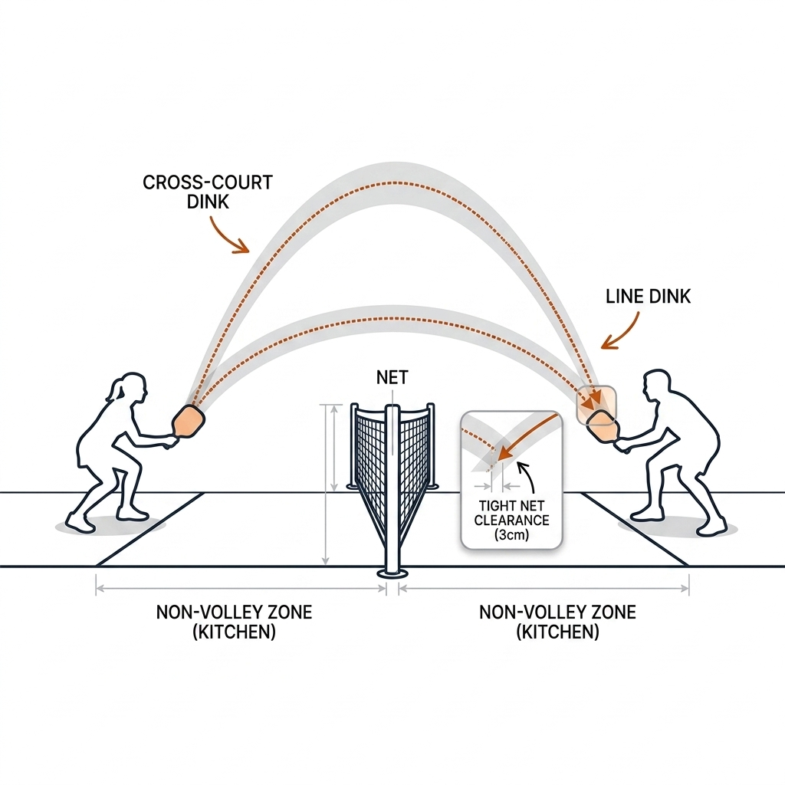
Payoff: coaching — patience training with a number attached; the drill stops being "dink fifty times" and becomes "dink until the state value turns".
Category B: Rugby League Possession Decisions (UC 04-06)
UC 04 — Field-Position Value: The Kempton Lineage
How much is ten metres worth? Every rugby league coach acts on the answer; the lineage of §22.5 is the published attempt to measure it. The mechanism is a possession-outcome model over field position: EPV(x) = Σ_o P(outcome o | position x)·points(o), over the five outcomes of Sawczuk 2024 — converted try, unconverted try, penalty goal, drop goal, no points. Kempton 2016 (768 NRL matches, source-backed) established the monotonicity: value climbs toward the opposition try line, and possessions after an opposition error or dropout out-value possessions after a completed set. Sawczuk 2024 (99,966 Super League possessions, source-backed) made the surface smooth with a 33-centre Bayesian mixture — no tracking data required.
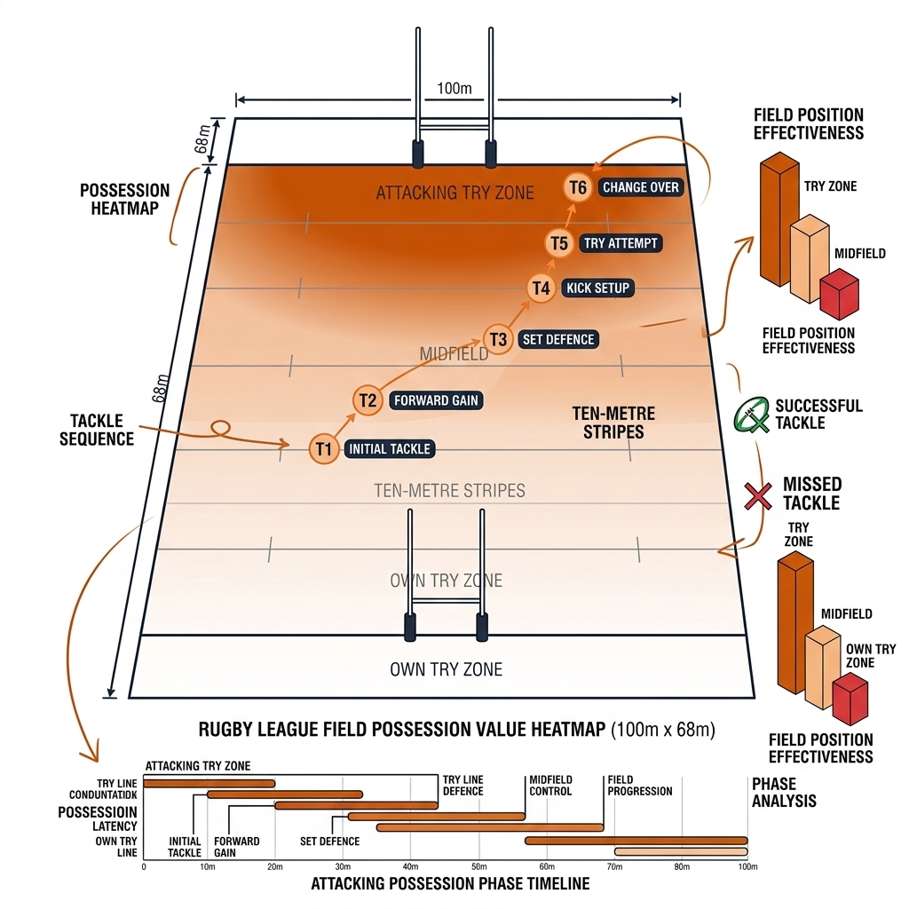
Payoff: recruiting and in-game tactics — territory decisions stop being folklore and become a tradeable quantity.
UC 05 — Tackle Value: When to Give Up a Tackle
The counterintuitive rugby league decision: sometimes the right tackle is the one you don't contest. The problem — defenders fight for a dominant, slow play-the-ball on every tackle, but against a spread attack a surrendered quick play-the-ball can keep the line set and be worth more. The mechanism values the tackle by its effect on the rest of the set: VAEP(tackle) = ΔP_concede over the remaining tackles, where a slow ruck lowers the attack's EPV on tackles two and three but a quick one preserves the defensive line's shape. The six-again era sharpens the question: an infringement now costs an extra tackle instead of a penalty, which should raise the value of ruck control — but every published value predates the rule, so the magnitude is [verify] until the §22.5 re-estimation lands.
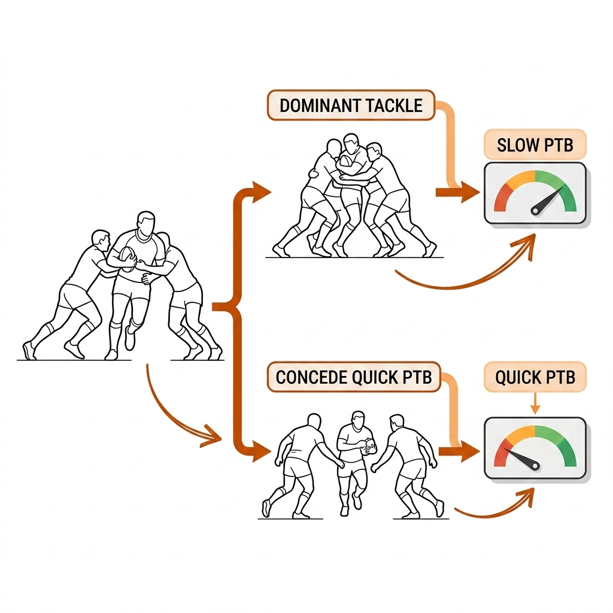
Payoff: defensive coaching — a principled answer to "when do we contest the ruck?" instead of an effort-maximizing default.
UC 06 — Kick Value: The 40/20 Versus Field Position
Fifth tackle, own forty, nothing on. The problem: attempt the 40/20 for the scrum feed and an attacking set, or kick long and safe and trust the defence? The mechanism is the reward/risk split of the 2025 U-Net EPV recipe (source-backed, §22.3): Net(kick) = P(success)·EPV(after 40/20) + P(touch, no 40/20)·EPV(opposition set) + P(out on the full or returned)·EPV(counter-attack). The 40/20's reward is large — possession near halfway with a set of six — but its failure modes hand the opponent either seven tackles or a broken-field return. The safe kick's value is boring and positive: it trades a small reward for a collapsed risk term. Component probabilities from the Sawczuk surface; the exact NRL magnitudes are [verify] on closed data.
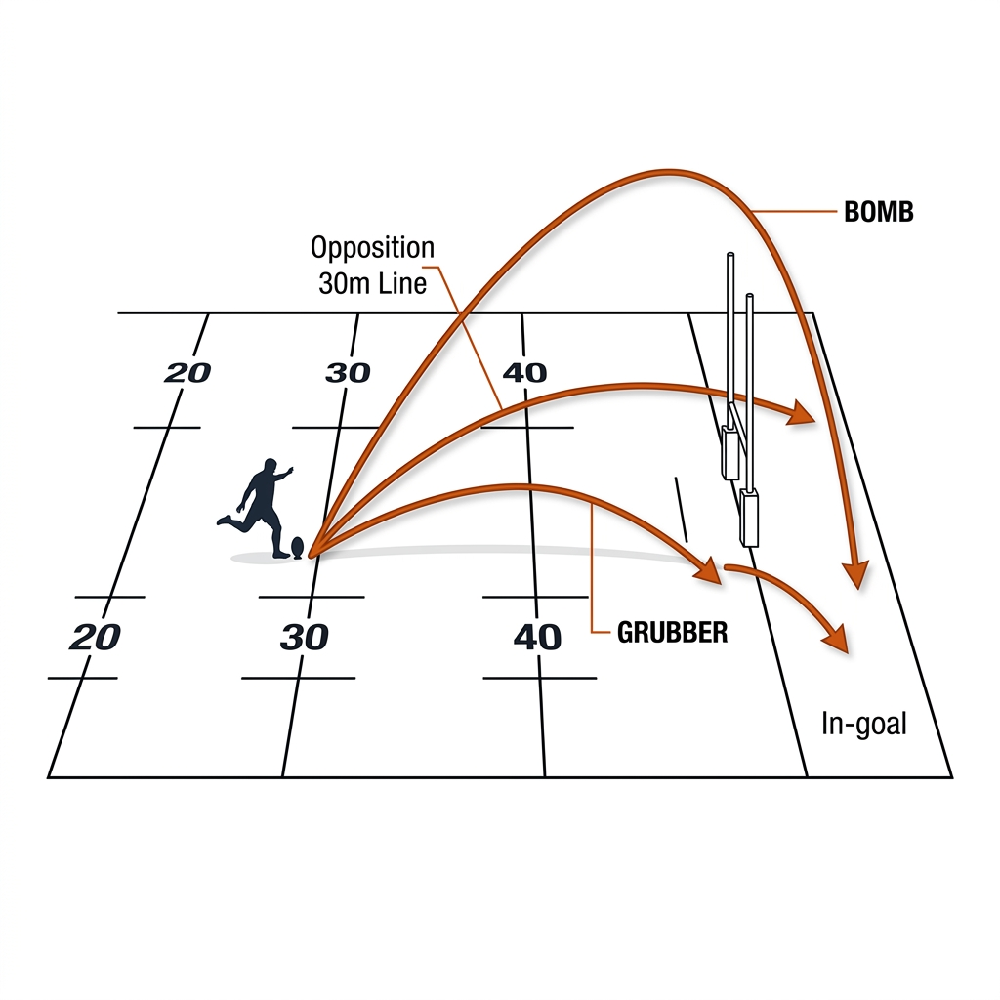
Payoff: kicking strategy — a decision threshold the kicker rehearses, calibrated to their own leg rather than the league average.
Category C: Model Discipline & Transfer (UC 07-10)
UC 07 — The xG Transplant: The Honest Gap
Every pickleball analyst gets asked for "xG for pickleball". The honest answer: it does not transplant, and knowing why is worth a use case. The problem is structural — xG values a shot because soccer has a shot-to-goal terminal event; pickleball's terminal event (the rally) is one to three shots away and opponent-dependent, so there is no clean binary to regress. The mechanism that survives the transplant is the conditioning, not the target: a point-probability model P(server wins rally | shot type, zone, phase) fitted on pklmart rows (§22.4). The math gap is selection bias: xG conditions on "a shot was attempted", and soccer shots are nearly all genuine attempts; pickleball's attempt set is endogenous — players only drive when the state flatters the drive — so naive per-shot success rates overstate the aggressive option (§22.8). Source-backed in soccer; concept-transfer in pickleball.
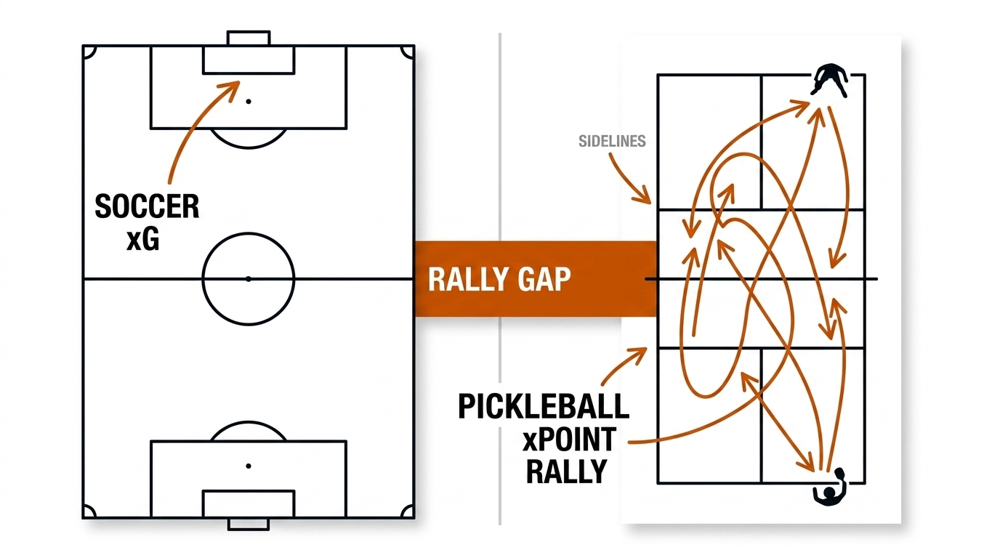
Payoff: the analyst — stops a wasted quarter fitting soccer models to rally sports, and redirects the effort to the state-value model the sport actually supports.
UC 08 — The Value-per-Event Dashboard: The C28 Feed
A value model that lives in a notebook helps no one at courtside. The problem: the coach needs a per-event value at the moment of decision, in the same glance as the score. The mechanism is a schema append, not a new pipeline: every PBN/NRLSheet event row (chapter 17) gets a ΔEPV/VAEP column written at ingest time, and the cockpit (chapter 28) renders it — value heat on the court minimap, a value-per-shot-type bar chart, the running EPV line through the rally or set. The math is streaming inference: XGBoost on ~20 state features is sub-frame on an M4 [verify — the lab has not yet benchmarked the fitted model; the synthetic C22-lab logistic runs in microseconds]. The real latency is upstream event detection (chapters 8-12, 19), not the value model.
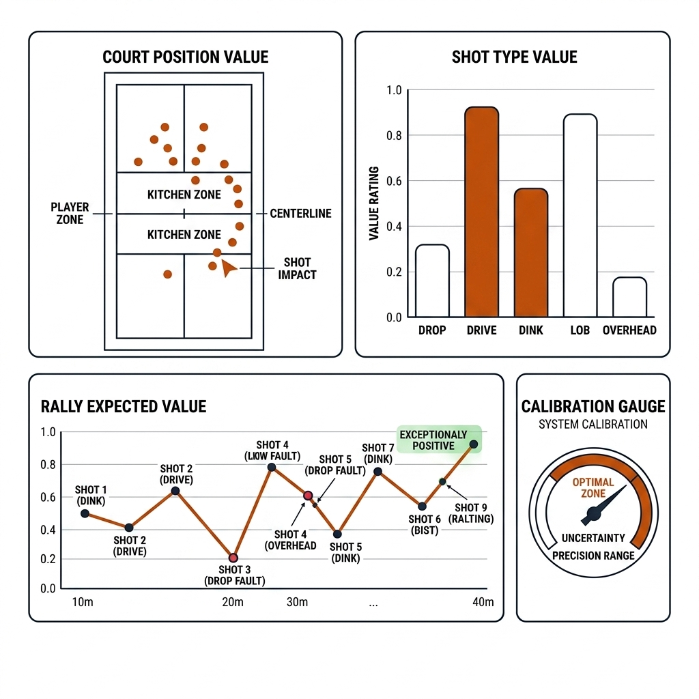
Payoff: the coach — value lands where decisions are made, not in a post-match PDF.
UC 09 — Calibration: How to Score the Model
A value model with good ranking and bad calibration is worse than no model, because decisions consume the numbers, not the ordering. The problem: "the drive is worth 0.65 and the drop 0.50" is actionable advice; if the true rates are 0.52 and 0.50 it is noise with confidence. The mechanism is the chapter-20 discipline applied to value outputs: Brier score as the teaching default, log loss when probabilities feed downstream decisions, and the reliability diagram as the trust certificate. The math: Brier = (1/N)Σ(p_i − y_i)², reported against a base-rate Brier skill score, with a fixed, disclosed binning protocol so figures compare across models (§8 of the dossier). The lab's toy logistic (C22-lab, measured: Brier 0.1728, bins within ~0.05) is the shape of the report every value model must ship; temperature scaling (Guo et al. 2017) is the first fix when the bins fail.
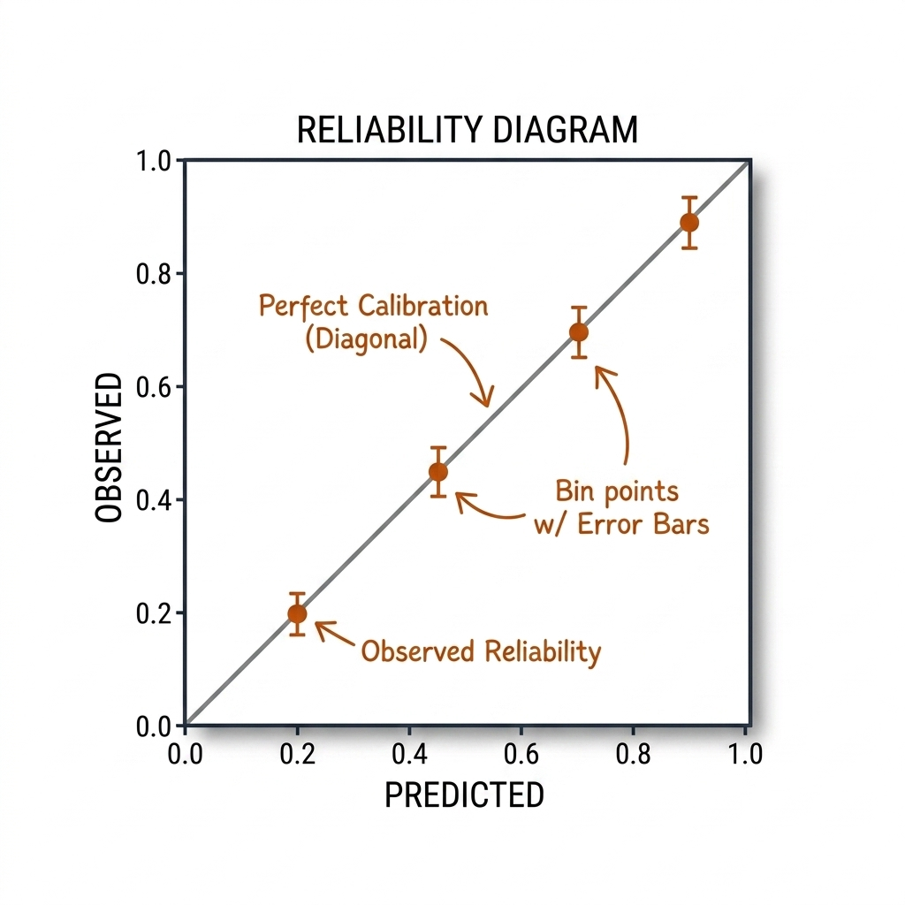
Payoff: everyone downstream — calibration is the difference between a model the coach can bet a game plan on and a chart for the wall.
UC 10 — The Game-State Context: Score and Time
The same third-shot drop is worth different amounts at 10-2 and at 10-10, and a value model that ignores it gives wrong advice precisely when the match is on the line. The problem: EPV as defined in §22.2-22.4 values the rally, but the decision target is the match. The mechanism is a state extension — score differential and time enter the feature vector — and an objective correction: the right maximand is P(win match), which decomposes over future rallies and diverges from rally-EPV when variance itself has option value. The math: trailing late, a team should prefer higher-variance actions even at lower mean EPV, because it needs the tails of the distribution, not the middle. The variance-seeking principle is source-backed in game theory; its pickleball quantification is [verify] — no fitted model exists. Rugby league's version is the clock: trailing by eight with ten minutes left, the completion-rate grind is worth less than the kick-chase, and any EPV that can't see the scoreboard will recommend the grind.
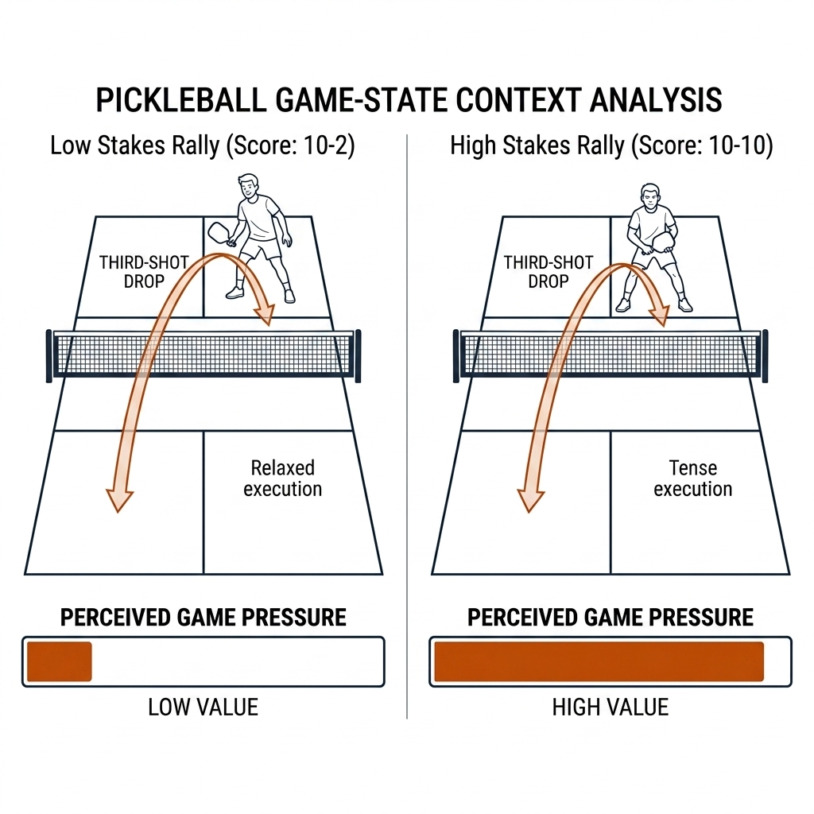
Payoff: the decision-maker — value models grow up from "what is good on average" to "what is good now", which is the only question a coach actually asks.
22.8c What This Adds to the Pipeline
The ten use cases are consumers and producers across the book's stack. Upstream: every case consumes the PBN/NRLSheet event rows of chapter 17 and the court/field geometry of chapter 3; UC 01-03 and UC 07 additionally block on the PBN v2 coordinate extraction (chapter 6 homography) for a true metre-scale value surface. Downstream: the ΔEPV column is the value feed for the chapter-28 cockpit (UC 08); per-action values aggregated over a season are the input to chapter-21 ratings (value-added over a same-state baseline, not raw totals, per §22.8); the reward/risk decomposition feeds chapter-23 tactical ML's action recommendation; and the counterfactual discipline — what would the rejected option have been worth — is chapter-24 simulation's home ground. The calibration report (UC 09) is chapter 20's contract made specific to value models, and the game-state extension (UC 10) is the bridge to chapter 21's clutch-weighted ratings. Nothing in the ladder is an endpoint; every rung is a column in someone else's table.
22.9 What I Would Measure Next
- socceraction tutorial on StatsBomb open data — the full SPADL→xT→VAEP recipe with a calibration report (M4, no GPU).
- Pickleball drive-vs-drop model on pklmart rows via pklshop → PBN v2 — the first-of-kind validation, with bootstrap CIs over matches and a head-on test of the +0.142 / −0.188 boundary [verify].
- Colab: Sawczuk-style Bayesian EPV re-estimated on six-again-era NRL data — the open re-estimation the literature is missing.
- PBN v2 coordinate extraction from pb-003 (chapter 6 homography × chapter 17 v2) — the unblock for a true pickleball xT surface over court metres.
22.10 Sources
- xT: Karun Singh, Expected Threat — https://karun.in/blog/expected-threat.html; socceraction (SPADL/VAEP/xT, Apache-2.0) — https://github.com/ML-KULeuven/socceraction · https://socceraction.readthedocs.io/
- VAEP refinements: Atomic SPADL — https://arxiv.org/abs/2011.00126; U-Net EPV with pass reward/risk split — https://arxiv.org/abs/2502.02565
- EPV: Cervone et al. 2014 basketball EPV — https://arxiv.org/abs/1408.0777; nflfastR expected points — https://github.com/nflverse/nflfastR
- Rugby anchor: Kempton et al. 2016 — https://pubmed.ncbi.nlm.nih.gov/26190116/; Sawczuk et al. 2021 — https://journals.plos.org/plosone/article?id=10.1371/journal.pone.0259536; Sawczuk et al. 2024 — https://arxiv.org/abs/2212.10904
- Pitch control & tactical ML: Spearman 2018 (MIT Sloan); TacticAI — https://arxiv.org/abs/2310.10553; exPress (MIT Sloan 2025) — https://www.sloansportsconference.com/research-papers/contextual-valuation-of-individual-players-within-pressing-situations-in-football
- Pickleball data: pklmart (Kaggle, 300k+ shots, CC BY-NC-SA 4.0) — https://www.kaggle.com/datasets/cakesofspan/pklmarts-competitive-pickleball-extracts; pklshop — https://pypi.org/project/pklshop/
- Calibration: Guo et al. 2017 temperature scaling — https://arxiv.org/abs/1706.04599; chapter 20's Brier/ECE discipline.
- Lab:
lab/w5_lab_expected_value.py→experiments/c22-expected-value/outputs/metrics.json(C22-lab; Brier 0.1728). Practitioner Delta-EPV boundary: Technology Dossiers/Pickleball and NRL Practitioner Tactical Playbook.md [verify — NOT-FOUND in literature].